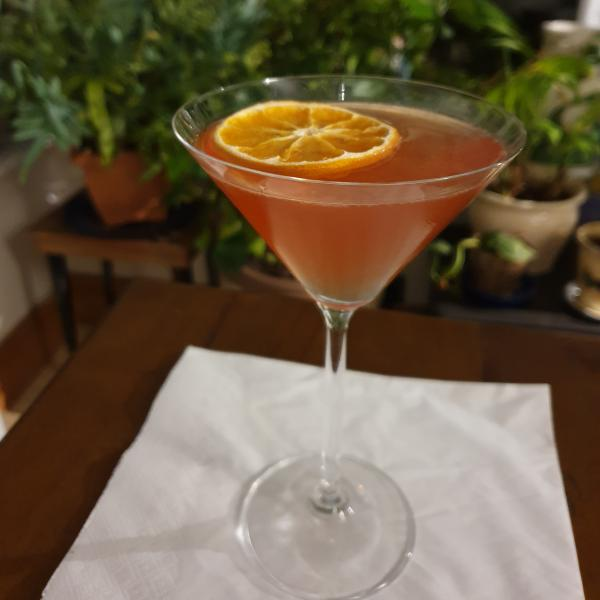

On hiatus
From february I am on hiatus from updating this website. Stay tuned as I'll be back soon to add many more cocktails. For my latest cocktails remember to checkout my Instagram where I am still posting.
@danieldoescocktails
Floradora
Definitely a favourite of late, this cocktail has a perfect sweet blend of flavours. The raspberry and the ginger go very well together and I recommend giving this a try.26/01/21 |
|
Bella Donna
Tastes delicious and is a great use of amaretto.04/01/21 |
|
Hot Mexicano
A great winter-warmer for when you want a coffee but you also want alcohol. It has a strong sharp tequila flavour mixed with that of coffee.28/12/20 |
|
Rum Eggnog
Beat the egg white with 1 tsp of sugar until there are stiff peaks. Whisk the egg yolk seperately then fold into the main mixture, set aside. Beat the double cream, vanilla extract and the rest of the sugar seperately before folding in to the egg mixture. Finish by gently mixing in the rum and refrigerating for a couple hours. This takes a little bit of effort to make, but is an elegant foamy recipe.24/12/20 |
|
|  |
Christmas Daiquiri
This is a wonderful addition to christmas as it has warm notes from the rum and is elevated by the use of Falernum instead of sugar syrup and by the sharp taste of cranberry. I definitely recommend giving this one a try during the festive season.20/12/20 |
Bacardi Special
The perfect combination of gin and rum that will surely get you drunk very quickly.13/12/20 |
|

|
Amaretto Sour
A very delicious nutty, sweet and sour cocktail that I absolutely adore. The balance of these simple flavours mean it's probably my favourite sour so far! I could have it again and again which is great considering Amaretto is so much cheaper than lots of other alcohol.29/11/20 |
Pornstar Martini
One of the first cocktails I have made with my university's cocktail society! Everyone knows this cocktail, it's probably one of the most popular in Britain right now. Defintiely try this out, it's well-loved for a reason!14/10/20 |
|
Blackberry Margarita
Another variation on the classic margarita, this time making the cocktail sharp and tangy. These kind of recipes are great if you are low on spirits and want to do a lot with less.29/09/20 |
|
Blood and Smoke
Tart and citrusy, this drink is a great blend of flavours and is a great variation of a margarita. The smokeyness from the Mezcal is also a great addition - but the cocktail works just as well with double tequila if you don't have any with you. I found this unique cocktail from @houseofhogo.26/09/20 |
|

|
Russian Spring Punch
A classic 80s cocktail that is very boozy. The story behind this one is that it's creator, Dick Bradsell, had a friend who wanted to host a cocktail party but didn't have much money so wanted something cost-effective. They told guests to bring their own prosecco or champagne and they would mix the rest, meaning guests who brought an expensive bottle would still get an expensive-tasting cocktail.11/09/20 |
Salty Bird
A bittersweet cocktail with tasty notes of pineapple and Campari, delicious.30/08/20 |
|
Conquistador
A boozy sour cocktail with a satisfying flavour profile. Each mouthful gives a distinct taste of tequila, quickly followed by the power of aged rum.16/08/20 |
|
Dark and Stormy
This is a national drink of Bermuda! It's like the cooler older-brother of the Moscow Mule. The dark rum lends itself well to the ginger beer and I think it tastes a little less dry than the mule. I recommend giving this one a try.10/08/20 |
|
Sea Breeze
I don't know if I'm being overly poetic, but the drink does feel like the sea breeze. It starts with a sweet taste before you are immediately hit with the dryness of the vodka, sort of like when the wind picks up at the beach. Not only does it taste great, this one will also get you drunk very quickly.02/08/20 |
|
Tequila Sunrise
Very well known and for good reason. Not only does this drink look absolutely stunning, it's flavour-profile changes to become sweeter as you get further into the drink. I definitely recommend this drink but be careful because it'll be downed before you know it.02/08/20 |
|

|
Enzoni
All the flavours from this cocktail balance so there is a perfect combination of sweetness and bitterness, leading to a sublime taste, especially with the muddled grapes. This is a riff on the Negroni, and it is much more approachable because it is sweeter and less potent. I definitely recommend giving this one a go as it is a brilliant Campari cocktail.12/07/20 |
El Diablo
All the different components combine very well to create this well-known cocktail. Each flavour is very distinctive and delicious.05/07/20 |
|
Paloma
Continuing with my recent tequila themed recipes, this is a popular cocktail that mixes grapefruit with tequila and lime juice, granting the perfect amount of acidity and taste. There are multiple different variations of this recipe, this one being probably the most simpliest and easiest to make. The grapefruit soda can be switched for pure grapefruit juice and soda water to make another variation on this recipe.28/06/20 |
|
Tommy's Margarita
This cocktail brings a sweet edge to the classic Margarita. It's an awesome cocktail and it's definitely a favourite. Tequila is made from the Agave plant, so the addition of the Agave syrup seriously compliments the drink and brings out that flavour. If you like Tequila then this is a must-try!21/06/20 |
|
Margarita
As fiery as the Mexican Desert, the Margarita is probably one of the most well known cocktails out there - for good reason. This cocktail is a great introduction in to tequila and is a defining classic.16/06/20 |
|

|
Americano
The predecessor to the Negroni, all the way from the 1860s. This cocktail packs the same punch as the afore-mentioned cocktail, but with a bit of fizz as-well.14/06/20 |
Piña Colada
Aery and delicious. This cocktail packs a summer punch that is sure to take anyone who drinks it straight to the Carribean, even those like me in dreary old England. This cocktail is a very popular classic so there are many variations; for example if you do not have access to a blender, change the recipe to 45ml of both lime juice and coconut milk and 15ml of lime juice and shake into a glass full of crushed ice. That is just one variation of many.07/06/20 |
|

|
French Martini
A wonderful drink that is nicely fruity and boozy and that is also neither French nor a Martini. Usually this cocktail is done with Chambord (raspberry liqueur), but Crème de Cassis (blackcurrant liqueur) substitutes nicely if you happen to have that on-hand instead, providing a slightly sharper taste.24/05/20 |
Gilbert Grape
This cocktail tastes as golden as it looks. While I expected the sugar and grapes to overpower the rest, I was suprised with how wonderfully balanced and mellow the drink is. This one is definitely another favourite.17/05/20 |
|
Gin Rickey
If you are low on ingredients like myself, then here is another one for you. Similiar to the Tom Collins but with more of a kick, this recipe makes a triumphantly sharp, zingy and refreshing cocktail. It's very simple and would be great on a hot day.10/05/20 |
|
Angostura Sour
Most recipes only use a couple dashes of bitters, but have you ever wondered what would happen if you used a whole shot of it? Well it's actually very delicious, rich and of-course has Angostura's signature notes of cinnamon and other herbs and spices. It's also balanced really well with the sour and sweet components and worked much better than I thought it would. Note: Yes it should normally be in a martini glass.26/04/20 |
|

|
Bennett
Cousin to the Gimlet, the Bennett adds both sweetness and bitter aromatics. It's basically the sexier version, though it still retains a dorky name.19/04/20 |

|
Gimlet
If you're running extremely low on ingredients, why not have your gin almost neat! This is an iconic cocktail from all the way back in the 1930s. Theres not much to say about this one, it's gin and juice, it works.15/04/20 |

|
Breakfast Martini
Lots of my recent cocktail have been very citrusy and here's another to add to that trend. This cocktail (and the last) is great if you have some orange marmalade lying around, it adds sweetness and a unique flavour to an otherwise standard cocktail.29/03/20 |

|
Paddington Bear
A local recipe made with local gin from Archangel Distilleries. It has a fantastic balance of bitterness from the Campari and the sweetness from the orange components. It's really good to get another recipe to use up the Campari, since I don't use it that much.27/03/20 |
Honeysuckle Daiquiri
A twist on a classic daiquiri. Has a subtle honey note that I really like and it is another recipe that will help me use up my honey syrup.03/03/20 |
|

|
Moscow Mule
An explosive drink that is easy to make and has a strong gingery punch. Typically you'd put this in a copper mule mug but I didn't have one of those so I just used regular mugs - still works just less flashy.03/03/20 |

|
Midori Sour
Has a wonderful melon taste and a nice foam. Midori seems to make a good base by itself as no other spirit is used in this drink. It's a great one to make for other people as it has an impressive colour. It's a brilliant showstopper!03/03/2020 |
Gin Fizz
This recipe has very simple ingredients and is very easy to make. It is a great introduction to sours because it is lengthened by the soda water, and the combination of fizz and egg white can lead to some impressive foaming if done right. Of course this was my first try so it didn't quite stand up on it's own in this photo.08/02/20 |
|

|
Fireman Sour
An unusal cocktail that makes use of grenadine. It has a great combination of the sweet and the sour elements and has a really impressive colour.08/02/20 |

|
Kamikaze
The kamikaze definitely lives up to it's name in it's sourness. Despite this, it's a pleasing cocktail that has a clean citrusy taste.15/12/19 |

|
White Russian
My favourite cocktail at the moment! This one is a bit like marmite, you either love it or you hate it. Most times I suggest this to people I get lots of "milk and alcohol - wuuuuuh!?" but trust me atleast try it once. It's like an iced coffee but with alcohol, what more could you ask for? Give this one a go, I keep coming back to it and I can't wait to try some variations on it when I get more ingredients.15/12/19 |

|
Espresso Martini
An iconic recipe that seems to be on the menu at every bar and club I've ever walked into. If you want to be fancy then get the espresso fresh from a coffee machine, though if you are like me and don't have one then use 36g of fine ground coffee in a french press. I even managed to get instant coffee working at a friends house but I wouldn't recommend it.04/12/19 |
Cosmopolitan
Everyone knows about the Cosmo as it's a super popular drink, this recipe makes a tasty cosmo just like you could get on a night out. *The amount of cranberry juice can be varied depending on how concentrated or diluted it is. Looking back, 25ml was a bit too much for the cocktail I made in the picture, so look for a lighter colour ideally.21/11/19 |
|

|
Gin and Jam
Sounds super weird right? Well... it's delicious, has a wonderful sweetness and has a beautiful colour. This one has been especially popular with my friends who seem to love the combination so it's a real crowd-pleaser. This cocktail is also very entry-level, no liqueurs needed!30/10/19 |
Bramble
Though it sort of looks like Ribena, I can tell you it tastes a lot better than it and has the added bonus of getting you drunker. If you have blackberries then be sure to give this cocktail a try. *The creme de mure is not massively important in this version.24/10/19 |
|

|
Cucumber Lemonade
Honestly this cocktail is strange. It tastes alright and if you really like cucumber then give it a go but I'm not completely sold on the concept of cucumber together with alcohol yet.14/10/19 |

|
Tom Collins
Super easy to make and a pretty famous cocktail. The Tom Collins is probably the most popular Collins recipe and is good at adding a bit of sweetness to your gin and lengthening with soda. It's easy to see why it's so popular when you taste it, can't really go wrong.06/10/19 |
Bee's Knees
Considering theres only 3 ingredients, this cocktail is wild! I'd recommend making a big bottle of honey syrup because you're going to want to make this often. It has perfect sweetness and allows your chosen gin to take center stage whilst maintaining a noticable note of honey and lemon. Fantastic.29/09/19 |
|

|
Negroni
The first proper cocktail I've ever made. The negroni is very famous in Italy and elsewhere and they say that you need to drink it thrice before you start to like it. It is very bitter but has a distinct taste. This cocktail is very respectable and there are many different variants on it to check out. I wouldn't recommend it as your first cocktail because of the bitterness and potency and the fact you have to buy 3 expensive spirits, but I would definitely recommend it once you get things moving.25/09/19 |
|
End of table. |
|
|
The below cocktails I don't have the recipe for, since I got them when I was out and about or had them sent as a gift. Listed alongside the name of the cocktail is the name of the place, so check them out if you happen to be passing by! |
|
|---|---|

|
Tiki Punch - Pepperrocks NottinghamA rum cocktail that's very boozy and tastes of pineapple a burnt sugar. This was one of the many fantastic cocktails I've had here and I recommend going if you are in town. The atmosphere of this bar is very cozy and it's just an awesome place to be.19/10/20 |

|
Mojito MixIt's a Mojito, the well known minty cocktail that can knock your socks off. This one came as a gift in Secret Santa from my amazing collegue Urte, it was a really cool pre-mixed cocktail where all you need to do is add rum. In this photo I should explain that yes the ice is melted and yes it's been taken on the stairs, because I was a few down that night - I don't ever listen to anyone who says it isn't classy for the bartender to drink!08/02/20 |
Singapore Sling - Changi AirportA super sweet and refreshing cocktail. This one will always bring great memories as I had it when transiting on my way back from my holiday in New Zealand. If you ever pass through this airport, makesure to visit the Cactus garden as it is a great place to escape from the crowds and enjoy yourself a nice cocktail.23/01/20 |
|

|
Tuk Tuk Riksaw - Kama Vineet LondonThis cocktail was really nice and had notes of apple and citrus, it was very good in accompanying and complementing the Indian currys served at this restaurant. I'll admit this one is a bit of a flex but I promise I don't do fancy stuff like this all the time. 12/12/19 |

|
Tokyo Iced Tea - Mr Postles NorwichWhile most people know the Long island iced tea, which uses cola and a bunch of different spirits, the Tokyo island iced tea instead swaps out the cola for Midori, a melon based liqueur. It's got a brilliant sweet and fruity taste and it's just wonderful. Mr Postles is also a great bar that gets pretty wild and is great for either pre-drinks or the main event.17/11/19 |